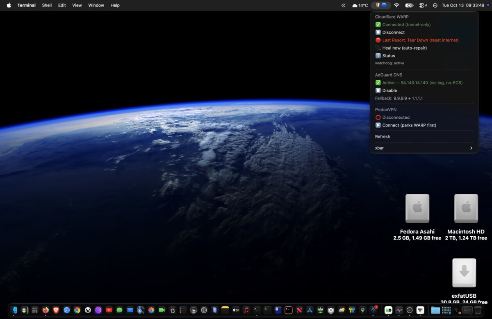

What the menu-bar glyphs mean
| Glyphs | Tunnel | DNS |
|---|---|---|
| 🛡️🔵 | Cloudflare WARP connected | AdGuard |
| 🛡️⚫ | Cloudflare WARP connected | Fallback or DHCP |
| 🟣🔵 | ProtonVPN connected (WARP parked) | AdGuard |
| 🟣⚫ | ProtonVPN connected (WARP parked) | Fallback or DHCP |
| 💀🔴 | WARP torn down (Last Resort: Tear Down); the watchdog stands by | Dropped to DHCP so a captive portal can intercept |
| 🔓🔵 | No tunnel | AdGuard |
| 🔓⚫ | No tunnel | Fallback or DHCP |
Fix a specific problem
arp -an is emptyWhy Homebrew-launched tools see no ARP table or sockets, and the workaround.
Homebrew dropped Intel MacsWhat changed in September 2026, and moving to MacPorts step by step.
Why this exists
Most network trouble on a Mac that runs a VPN isn't the VPN. It's one of four things that look like the VPN:
- A DNS leak you can't see. DHCP, configuration profiles, VPNs and
networksetupcan all set resolvers, and onlyscutil --dnsshows which one is actually answering. - WARP's lockdown firewall with a dead tunnel. After sleep, a Wi-Fi change or
a captive portal, WARP's
pfanchor keeps blocking everything. The Mac looks online and isn't. - Two tunnels on one Mac. Bring ProtonVPN up next to WARP and WARP wedges.
- A gateway that isn't your gateway. ARP spoofing and evil-twin access points change the router's layer-2 identity while its IP stays the same.
What you get
| Area | What it does |
|---|---|
| DNS | AdGuard's no-log DNS servers with Quad9 and Cloudflare's malware-blocking resolver as DNSSEC-validating fallbacks. A system-wide DNS-over-HTTPS profile. checkdns shows every live resolver, DNSSEC, DoT, DoH and ECH, and checks for leaks. |
| ECH | A Chromium policy profile that stops Chrome, Brave, Edge, Vivaldi and Opera switching their own DoH off. Firefox user.js settings for ECH, DoH and HTTPS-only. Says plainly that Safari can't do ECH. |
| Tunnel | Cloudflare WARP in tunnel-only mode. warp-killswitch tears it down verifiably, rebuilds it and heals it, and a root watchdog probes raw-IP connectivity every 10 seconds. |
| Menu bar | One xbar icon for WARP, AdGuard DNS and ProtonVPN. Before ProtonVPN connects, WARP is parked: its daemon is stopped so it has nothing to wedge. |
| Host | Objective-See's free, open-source tools. LuLu blocks outbound connections you haven't approved; the Application Firewall only covers inbound. BlockBlock alerts when something installs a launch agent, daemon or login item, and KnockKnock lists everything already persistent. Homebrew casks, or the latest release checked against Objective-See's signing identity. |
| Monitoring | netwatch raises alerts for port scans and gateway-identity changes (ARP spoofing, evil twins), and ignores ordinary band-steering roams. netcheck gives a one-shot security report, including platform integrity: SIP, the sealed system volume, FileVault, Gatekeeper. |
| Investigation | probesource works out who knocked on your firewall. Its passive tactics send nothing to the target. Its active tactics are for hosts and networks you own or are authorised to test. |
Install
git clone https://github.com/doug445/Panoptes-macOS.git
cd Panoptes-macOS
./install.sh # as your normal user; asks for sudo onceThen checkdns, netcheck and sudo warp-killswitch status.
macOS never installs configuration profiles silently, so approve the two DoH profiles in
System Settings › General › Device Management, LuLu's network extension, and Full
Disk Access for BlockBlock; the installer says where. Leave the Objective-See tools out with
--skip objective-see. Everything is idempotent:
git pull && ./install.sh updates it, and ./uninstall.sh reverses
it.
Which Macs
| Apple Silicon, macOS 14+ | Intel, macOS 14+ | Intel / OCLP, macOS 11–13 | |
|---|---|---|---|
| Package manager | Homebrew | MacPorts (exclusive) | MacPorts |
| DNS, DoH, ECH, firewall, monitors | ✓ | ✓ | ✓ |
| Cloudflare WARP + kill-switch | ✓ | ✓ | — (WARP needs macOS 14) |
Built and used daily on an Apple Silicon MacBook Pro running macOS 27. It has also been run on Intel under macOS 26 with MacPorts.
FAQ
How do I check for a DNS leak on macOS?
Run checkdns. It lists every live resolver from scutil --dns rather than what a config file claims, and when a full-tunnel VPN owns the default route it flags any public resolver still visible as a possible leak.
Does Safari support Encrypted Client Hello?
No. WebKit has no ECH implementation as of Safari 26, and no setting changes that. Use Firefox or a Chromium browser with the suite's DoH policy for anything you want hidden from the network path.
Is it safe to run on a Mac I need right now?
The read-only tools make no changes at all: checkdns, netcheck, nettop, probesource's passive modes, warp-killswitch status, verify and state, and every detect.sh and verify.sh. The tools that write (Tear Down, Rebuild, Heal and the toggles) verify their result and tell you what they found.
Does it include an outbound firewall?
Yes, since 4.0.0: it installs LuLu, Objective-See's open-source outbound firewall, next to the Application Firewall, which only blocks inbound connections. Tick "allow installed applications" on LuLu's first run so WARP, ProtonVPN and xbar aren't questioned. Command-line tools such as nmap and arp-scan still ask once each.
Does it work on Intel Macs?
Yes, in a reduced but supported mode on macOS 11 and later, including OpenCore Legacy Patcher Macs. It installs through MacPorts there, because Homebrew no longer builds Intel bottles. Cloudflare WARP needs macOS 14.
The Linux counterpart is Panoptes.